実車データに基づくシミュレーション物理、2種類のAIシステム、プロシージャルエンジンサウンド。
ABS/TCS/ESC搭載、17台同時走行。本格レーシング体験をUnityで。
Unityで構築した本格レーシングシミュレーション。リアルな車両物理と2種類のAIシステム、プロシージャルオーディオで、毎回異なるレース展開を実現。
RPMベースのエンジンモデル、5速MT/AT、タイヤ摩擦カーブ、空力ダウンフォース。実車に近い挙動を再現。
ABS（アンチロック）、TCS（トラクションコントロール）、ESC（横滑り防止）。各システムのON/OFF切替可能。
プレイヤーの走行データを20Hzで記録・再生。順位に応じた速度ブースト、車線変更、スピン回避で本物のレースを演出。
Catmull-Romスプライン補間によるレーシングライン最適化。速度感応ルックアヘッド、障害物レイキャスト回避。
ウェーブテーブル合成でエンジン音をリアルタイム生成。F20C VTEC切替、EJ257ボクサーランブル、ターボBOV。
Photon Fusion Shared Mode。各プレイヤーが自車の物理を計算し、状態を同期。ラグなしの対戦体験。
リフレクション順位管理、ラバーバンドブースト、ラップ記録システム。17台のフルグリッドレース。
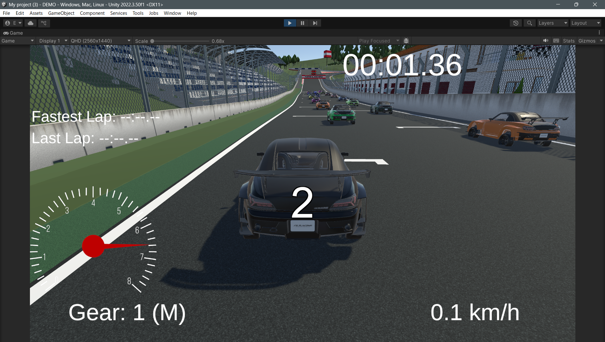
localCarcontroller.cs - 約2,000行のコードで構成される本格シミュレーション
RPM（回転数）ベースのエンジンモデル。トルクカーブ、ギア比、ファイナルドライブまで実車に準拠した計算。
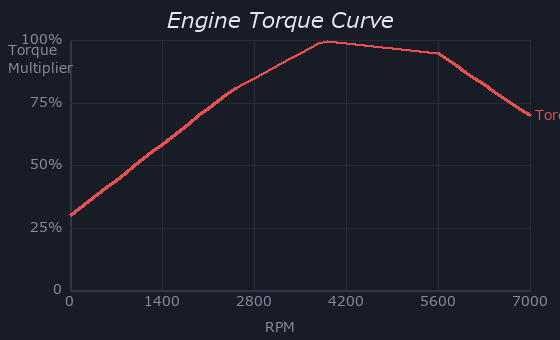
5点のキーフレームで定義。RPM正規化値(0-1)に対するトルク倍率:
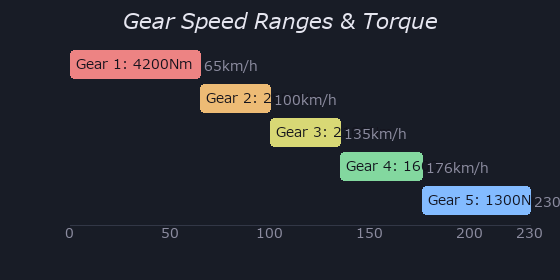
ワンボタンでオートマ/マニュアル切替。ATモードはRPMに基づく自動変速:
スロットルOFF時、最大トルクの1.5%がエンジンブレーキとして作用。
| パラメータ | 値 |
|---|---|
| 最大RPM | 7,000 |
| アイドルRPM | 900 |
| 最大トルク | 320 N·m |
| 最大ブレーキトルク | 3,000 N·m |
| 前後ブレーキ配分 | 65% : 35% |
| ホイール半径 | 0.33 m |
WheelColliderのFrictionCurveを詳細設定。前輪と後輪で異なる特性を持たせ、実車のようなアンダー/オーバーステア特性を再現。
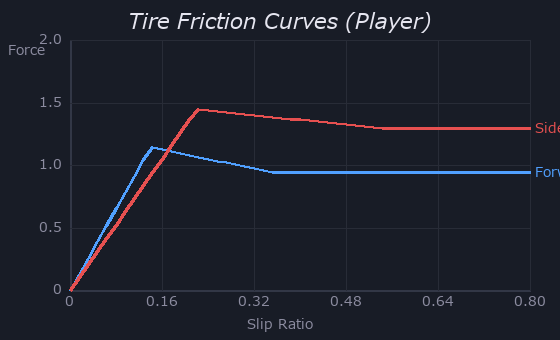
後輪の横stiffnessを25%増すことで、高荷重時に後輪が安定し、低荷重時（ブレーキング等）に自然なオーバーステアを発生。
3つの独立した車両安定化システム。各システムは個別にON/OFF可能。
スリップ閾値 0.06 を超えるとブレーキ圧を15Hzでパルス制御。
駆動輪のスリップが 0.12 を超えるとモータートルクを低減。
左右のサスペンション伸縮差からロール対抗力を算出。コーナリング時の車体傾斜を抑制。
速度感応式ステアリングとスピン時の安全システム。
タイヤリラクゼーション、トレイルブレーキング、トルクコンバーター、プロシージャル路面音、ゲームパッド触覚。locaCarcontroller v29の先進物理。
実車でブレーキングしながらターンインすると前輪荷重が増え、グリップが向上する現象を再現。レーシングドライバーの基本テクニック「トレイルブレーキング」を物理的にサポート。
CarBodyKit.cs - C#リフレクションでlocalCarcontrollerの全パラメータを上書きし、1つの物理コントローラーで複数車種を表現するアーキテクチャ。ボディのビジュアル差し替えとphysics tuningを同時に行う。
C#のSystem.Reflectionでprivateフィールドを直接書き換え。[DefaultExecutionOrder(10)]でAwake実行順を制御し、localCarcontrollerのStart()より先にパラメータを注入。
InspectorでoriginalBodyとreplacementBodyを指定するだけで、Awake時にSetActive切替。WheelColliderは共通のため、ホイールベースとトレッド幅が近い車種間で共用可能。
| パラメータ | S2000 (デフォルト) | WRX STI (CarBodyKit) |
|---|---|---|
| 駆動方式 | FR | AWD |
| 最大トルク | 320 N·m | 407 N·m |
| トルクカーブ特性 | NA高回転型 (5点) | ターボ中間型 (7点) |
| ギア数 | 5速 | 6速 |
| ファイナルドライブ | 3.8 | 3.9 |
| 最大ブレーキ | 3,000 N·m | 3,500 N·m |
| ダウンフォース | 1.8 | 2.2 |
| 空気抵抗 | なし | 0.38 |
| 横方extremumSlip | 0.22 | 0.20 |
| WC Substeps | デフォルト | 12/15 (安定性強化) |
NAエンジン(S2000)が5500RPM付近にピークを持つ鋭いカーブなのに対し、ターボ(STI)は3850-5250RPMの広い範囲でフラットなトルクを発生。これがドライビングフィールの違いを生む。
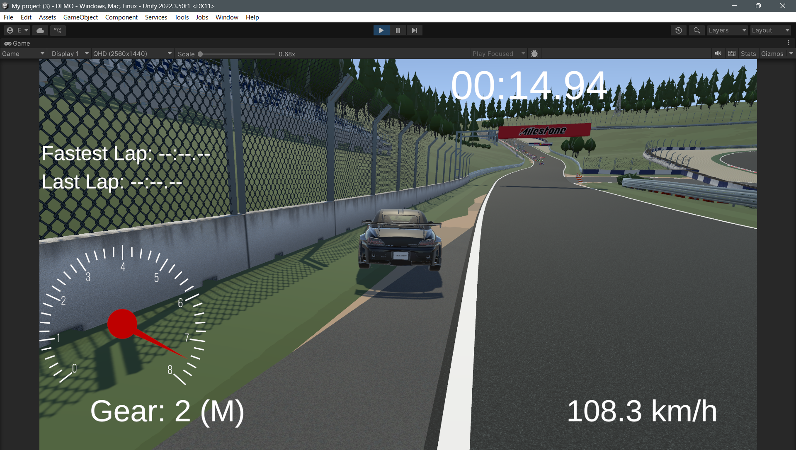
RecordingCPUController.cs (~2,700行) - プレイヤーの走行データを基盤に、リアルタイム補正で自律走行するAI
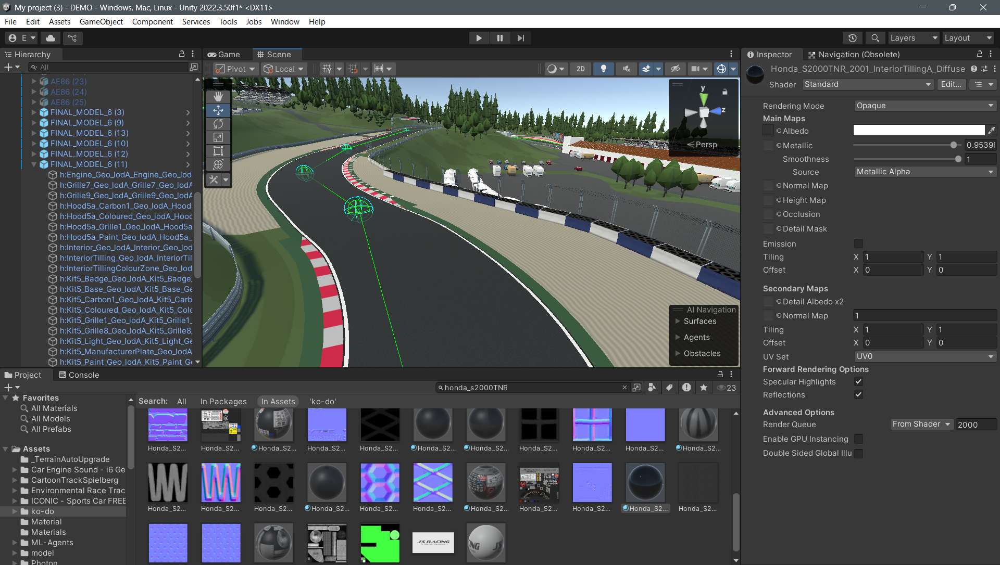
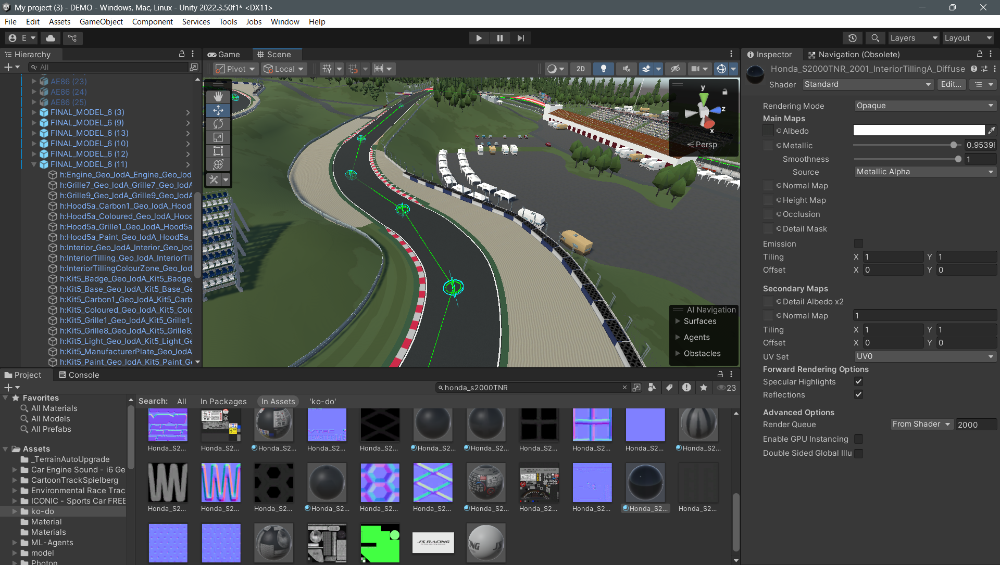
LapRecorderで記録した走行データ（20Hz = 0.05秒間隔）を基盤に走行。位置、回転、速度、ステア角、トルク値を忠実に再現しつつ、リアルタイムで状況判断を上乗せ。
speedMultiplier = 1.05speedNoise = 0.02 (±2%)0.005 (Perlin)30°3000 N·m1.8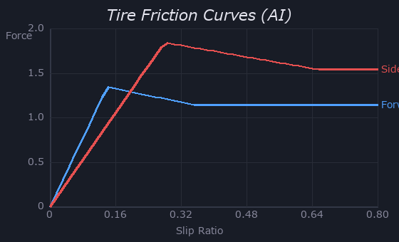
| ギア | 速度上限 (km/h) | トルク (N·m) |
|---|---|---|
| 1速 | 65 | 4,200 |
| 2速 | 100 | 2,800 |
| 3速 | 135 | 2,100 |
| 4速 | 176 | 1,600 |
| 5速 | 230 | 1,300 |
速度・コース逸脱度・カーブ曲率の3要素でルックアヘッド距離を動的に決定。
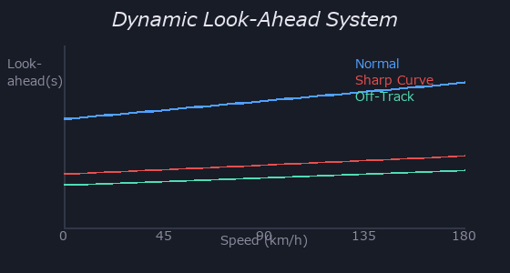
ルックアヘッド範囲内を2ポイントおきにサンプリングし、隣接セグメント間の角度変化を計測。
20°で100% → 40°で75% → 60°以上で50%まで短縮。S字コーナーやシケインの事前検知に使用。
角度正規化 → 感度ブースト → ノイズ注入 → ハイブリッドスムージングの4段パイプライン。
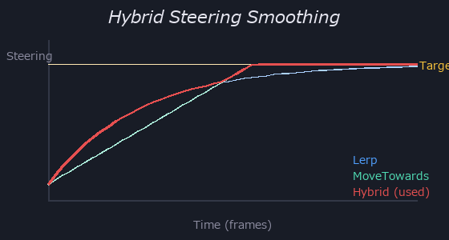
45°で±1.0に到達する設計。90°除算だとフルロックに達しづらいため、45°基準を採用。
コース逸脱度に応じて感度を最大3倍まで引き上げ。
AIの走行を機械的にしないための微小なステアリング揺らぎ。オフトラック時は無効化。
Lerp（指数減衰型）とMoveTowards（定速型）を毎フレーム並行計算し、目標値に近い方を採用。小修正はLerpが有利、大角度修正はMoveTowardsが有利。
先読みベースの予測ブレーキ + ステアリング連動減速 + コーナーブースト低減の3層制御。
レーススタート時（最初の10秒）は閾値0.92、ブレンド率0.2に変更し、より早くブレーキを開始。
ステアリング0.5以上で最大10%減速。
コーナー手前で速度が10%以上落ちる場合、順位ブーストを段階的に解除。
複数の補正係数を順番に乗算して最終目標速度を決定。
車ごとに固有のシード値で75-100%の速度抑制。7秒かけて徐々に解除し、1コーナーの密集を回避。
5つのレーン候補をスコアリングし、最適な走行ラインをリアルタイムで選択。壁レイキャストで安全範囲を制限。
各候補は壁レイキャスト（現在地＋20pt先＋40pt先）で安全範囲にクランプ。検知範囲: 前方15m。
他車距離 (x3)が最重要。次にレーン維持安定性(x1.5)、理想ライン近接度(x0.8)、同一方向ボーナス(x3)。
前走車に2-3秒以上接近し続けるとタイマー発動。最大40%の速度低減を段階的に適用。
下位のAI車ほど強力なブーストを受け、レースを接戦に保つ。
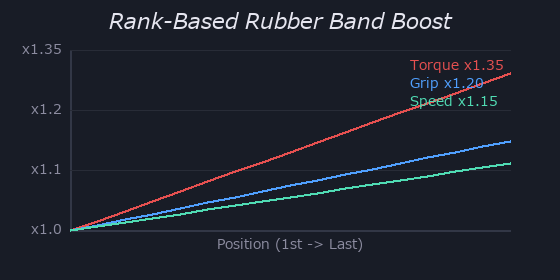
| パラメータ | 1位 (factor=0) | 9位/17 (factor=0.5) | 17位 (factor=1) |
|---|---|---|---|
| トルクブースト | ×1.00 | ×1.175 | ×1.35 |
| グリップブースト | ×1.00 | ×1.10 | ×1.20 |
| 最高速ブースト | ×1.00 | ×1.075 | ×1.15 |
並走時の知的な制御、衝突後の安定化、最下位時の記録データ切替による追い上げ。
AI車は衝突後に異常回転しやすい。即座の角速度半減 + 0.8秒の漸進的回復で、衝突後もコース上に留まりやすくなる。
ラバーバンドのトルクブーストだけでは追いつけない場合の追加策。より速いプレイヤーのラップデータに切り替えることで、ライン取り自体が改善される。
荷重感度、フリクションサークル、路面検知、ステアリング連動の4層グリップ計算。
| WheelCollider | 前方フリクション | 横方フリクション |
|---|---|---|
| extremumSlip | 0.14 | 0.28 |
| extremumValue | 1.35 | 1.85 |
| asymptoteSlip | 0.35 | 0.65 |
| asymptoteValue | 1.15 | 1.55 |
| stiffness (前輪) | 1.15 | 1.20 |
| stiffness (後輪) | 1.15 | 1.45 |
車体下方5点（中央＋4輪付近）からレイキャスト。タグ "Dirt", "Grass", "Sand", "outcourse" 等を検出。2点以上がオフトラックの場合 isOffTrack = true。
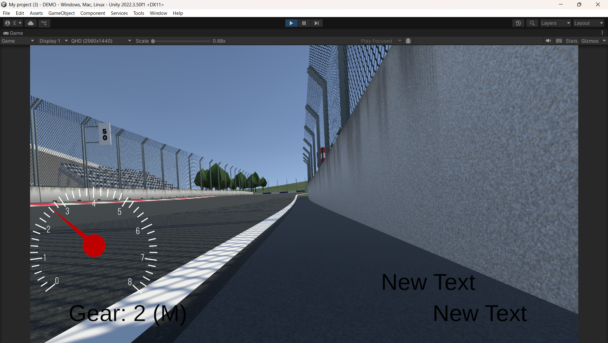
AutoDriveController.cs (~2,400行) - Catmull-Romスプラインとレイキャストで自律走行するAI
ウェイポイントをCatmull-Romスプラインで補間し、曲率ベースのオフセットで理想ラインを計算。Laplacianスムージングで最終形状を整形。
4つの制御点(P0-P3)とパラメータt(0-1)から滑らかな曲線上の点を算出。splineResolution=10で各ウェイポイント間を10分割。
曲率が大きいほどコーナー外側にオフセット。道幅の24%まで使用。
20km/hで8m先、150km/hで40m先を参照。速度に応じて線形補間。
非線形パワーカーブ + 速度依存スムージング + オーバーテイクバイアスの3段階制御。
指数0.7のパワーカーブで中間域を穏やかに、大角度域をシャープに。90°で±1.0に到達。
低速(30km/h)では素早く(1.5倍)、高速(150km/h)では慎重に(0.6倍)。
物理ベースの最適速度計算 + 運動方程式ブレーキ距離 + 角度別速度制限。
| 角度 | 速度上限 |
|---|---|
| > 90° | 30 km/h |
| > 60° | 45 km/h |
| > 40° | 60 km/h |
| > 10° | Lerp(100%, 50%) |
走行中にコーナー速度を自動調整する適応学習と、AI車両ごとに異なる運転スタイルを生成するパーソナリティシステム。
3点の座標だけからコーナーの曲率半径を正確に算出。ウェイポイント間隔が不均等でも正しく動作するため、手動配置のウェイポイントに対してロバスト。
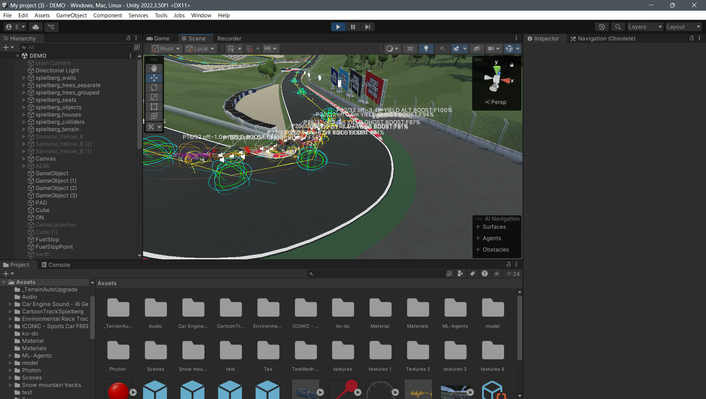
録音素材に頼らず、物理モデルからエンジン音をリアルタイム合成。車種ごとに異なるサウンドキャラクターを数式で定義。
F20CEngineAudio.cs - ウェーブテーブル合成によるVTEC切替対応の2カム・エンジンサウンド。排気パルスの物理モデルに基づき、ローカム/ハイカムの2波形をクロスフェード。
AudioClip.Createで1周期分の波形を生成し、AudioSourceでループ再生。ピッチ操作でRPM連動。メリット: OnAudioFilterRead不要でCPU負荷が極めて低い。
オシロスコープの点火パルスデータに基づく指数減衰パルス。周期の約80%が静寂→高回転でもパルス間ギャップ維持→4気筒感。
真空管アンプを模した3次有理関数。倍音を付加しながらピークを制限。
指数パルスは正バイアスが強いため、平均除去後に0.85ピークに正規化。
| パラメータ | ローカム (低回転) | ハイカム (VTEC後) |
|---|---|---|
| パルス減衰率 | 12 (~20%デューティ) | 18 (~13%デューティ) |
| 共振周波数倍率 | 3倍音 (暗い音色) | 4倍音 (明るい「叫び」) |
| 共振量 | 0.25 | 0.35 |
| LPFカットオフ | 1,500 Hz | 2,500 Hz |
| サブベース量 | 0.45 (フル) | 0.1125 (25%) |
| ノイズカットオフ | 400 Hz | 800 Hz |
| ノイズ量 | 0.08 | 0.12 |
| 歪みゲイン | 2.8 | 3.08 (×1.1) |
ギアごとに速度を正規化するため、シフトアップ時にピッチが自然に落ちて再び上昇する、実車と同じ挙動が得られる。
CarBodyKit.cs内蔵 - 水平対向4気筒特有の不等間隔排気パルス + ターボホイッスル + ブローオフバルブの3レイヤー合成。
unevenRatio = 0.38（38:62比）でこれを模擬。
スロットルを急閉した時に余剰ブースト圧を放出する音。2フェーズ合成。
Phase 1は圧力放出の「プシュー」、Phase 2はバルブのフラッター振動。25Hzの矩形波パルスでバルブの断続的な開閉を模擬。
RPM 20%以下ではブーストゼロ（タービン未作動）。20-50%のゾーンでリニアに上昇し、50%以上でフルブースト。
CrashSound.cs - OnCollisionEnterで衝突相対速度を取得し、速度に比例した音量でワンショット再生。
5m/s(18km/h)以下の軽い接触は無音。30m/s(108km/h)以上で最大音量。3Dサウンド(spatialBlend=1)で衝突位置から音が聞こえる。
なぜPlayOneShotか: Playだと前の音が止まるが、PlayOneShotは重複再生可能。多重クラッシュ時に音が途切れない。
なぜInverseLerpか: 線形マッピングだと低速衝突の音量変化が不自然。InverseLerpで閾値内を0-1に正規化し、Lerpで最小音量0.2を保証。完全な無音衝突を避ける。
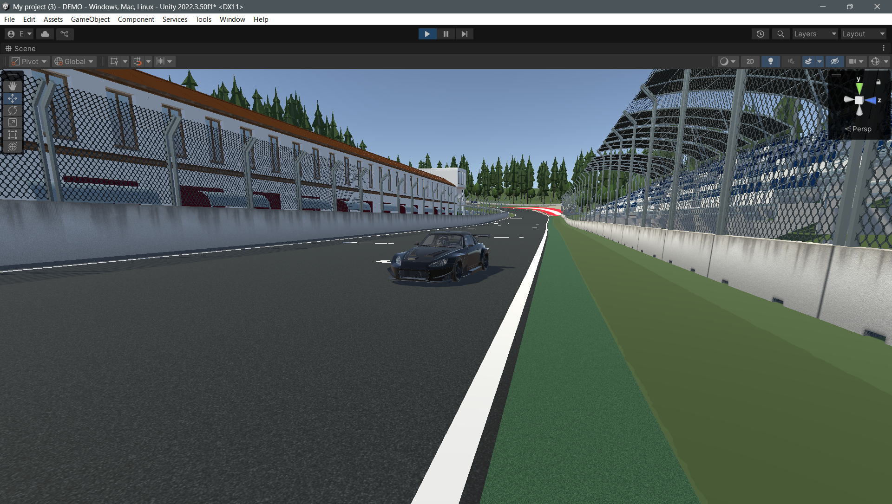
カウントダウン、順位管理、ラップ計測、カメラ、車両スポーンを統合的に制御するインフラレイヤー
RaceCountdown.cs - コルーチンベースの3秒カウントダウン。UIを動的に生成し、完了後に全車両の移動を許可。
CreateDynamicFontFromOSFont("Arial", 200)Destroy(textObj)RacePositionManager.cs - C#リフレクションで全AI車両の順位とブーストファクターをリアルタイム更新。レコーディングデータを共通基準軸として全車の進行度を統一的に計算。
RecordingCPUControllerのprivateフィールドにReflectionでアクセス。キャッシュ済みFieldInfoで高速化。
LapRecorder.cs - プレイヤーの走行データを20Hzでサンプリングし、AI走行の基盤データとしてJSON出力。
lap_1m23-45s.json (ラップタイム自動命名)Desktop/lap_data/ (自動作成)4つのスクリプトで構成されるカメラアーキテクチャ。チェイスカメラ + リアビュー + カメラ切替 + 衝突シェイク。
| パラメータ | 値 |
|---|---|
| 追従距離 | 10 m |
| 高さ | 3 m |
| スムージング | 0.125 s |
| シェイク強度 | 0.05 m |
| シェイク持続 | 0.2 s |
Photon Fusionモードでは、GameLauncherがスポーンしたプレイヤーアバターのTransformをcamera_m.Instance.Cinemachine.targetに設定。Lazy初期化パターンでシーン内のcamera_mを自動検出。重複防止のためAwakeで既存インスタンスをDestroy。
ゲームプレイ上、物理速度そのままだとプレイヤーに「遅い」と感じられるため、表示速度に1.4倍の補正係数を乗算。多くの市販レースゲームでも同様の手法を採用している。
タイトル画面で選んだ車番号をgame_managerシングルトンで引き継ぎ、レースシーンのAwakeで対応するGameObjectをアクティブ化。非アクティブなプレハブはロードされるが描画・物理は実行されない。
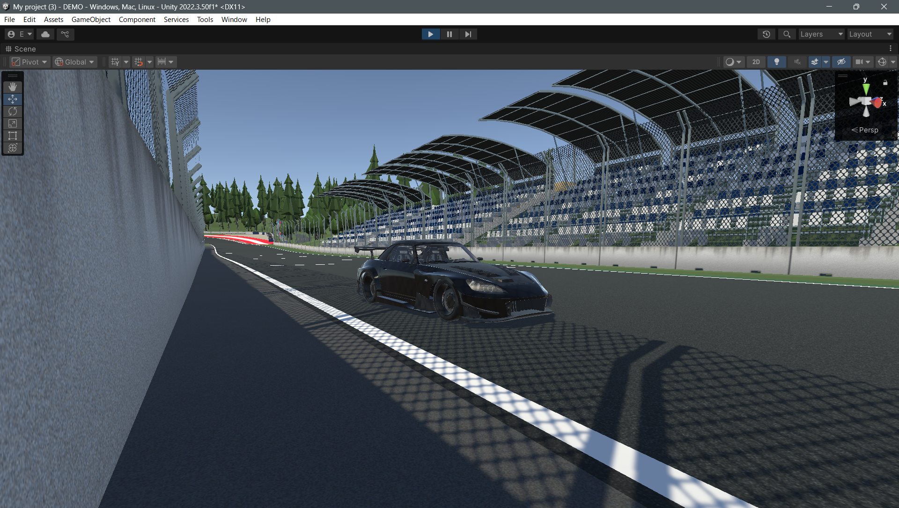
キーボードとゲームパッドの両方に完全対応
| 操作 | キーボード | ゲームパッド |
|---|---|---|
| ステアリング | A/D または ←/→ | 左スティック 左右 |
| アクセル | W または ↑ | RT (右トリガー) |
| ブレーキ | S / ↓ / Space | LT (左トリガー) |
| シフトアップ | V | B (Xbox) / ○ (PS) |
| シフトダウン | C | X (Xbox) / □ (PS) |
| AT/MT切替 | M | Y (Xbox) / △ (PS) |
| リセット | R | — |
| カメラ切替 | — | 十字キー 上下 |